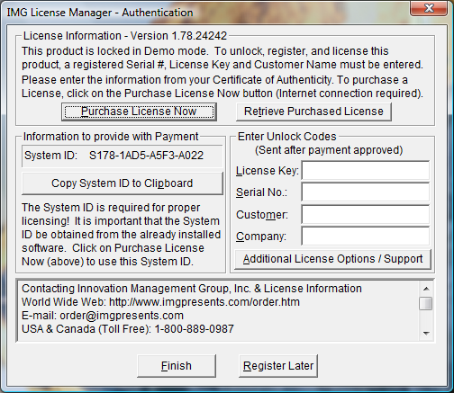
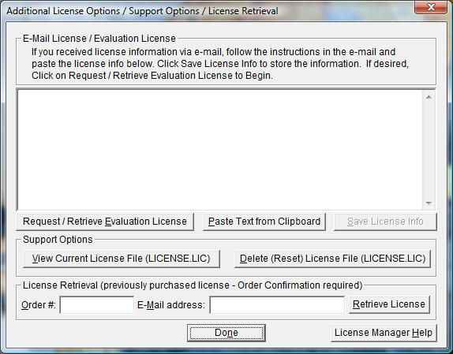
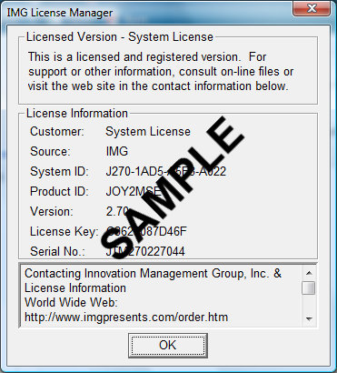

| My-T-Soft®: for Windows; Indestructible Keyboards and Indispensable Utilities; Version 1.80; User's Guide | ||
|---|---|---|
| Prev | Chapter 2. Getting Started | Next |
In order to License My-T-Soft, the correct License Key and Serial Number must be entered into the IMG License Manager, along with some text for the Customer (and optional Company) text areas. The License Key and Serial Number can be found on the Certificate of Authenticity, or in the Software Unlock Codes e-mail.

The License Key and Serial No. entries are a matched pair, and will work together to unlock the software. The Customer entry is required (i.e. some text must be entered in the Customer text area), but is not part of the license unlock process. The Company text area is optional, and will be shown as the Source when the product is licensed.
To quickly and easily license the software (on a system that has internet access), simply click on the "Purchase License Now" button. Once connected to IMG's website, you will be asked to enter billing information and payment information. Once paid, your order will be processed, and you will receive a confirmation e-mail and a separate e-mail with license information. Once the order is fully processed, you can then click the "Retrieve Purchased License" button to automatically license your system.
System ID Note: The System ID is used to accurately match the Product and Version you wish to license with the License Information provided. If the system you wish to License does not have Internet Access, you can use the Copy System ID to Clipboard to accurately copy the System ID to the clipboard (which can be saved in a text file or other document and moved to a system that does have Internet Access).
Note: The "Retrieve Purchased License" uses a unique identifier to automatically license your system (which is only sent if the "Purchase License Now" is used). If you try this on a different system, or after a system update or re-install (or after a change to this unique ID), the software will not license automatically. You will either need to enter the License Key and Serial Number, or go into Additional License Options (see below) and use your Order Confirmation Number and Order E-mail to retrieve the license.
Important Note: Be sure to save and/or print your Order Confirmation number (with Order E-mail), along with your License Key and Serial Number in case you need to re-license the software in the future (Operating System Re-install, hard disk reformat, new system, etc.)
Certificate of Authenticity Note: For Electronic Licenses, and Certificate of Authenticity can be retrieved on IMG's website: https://www.imgpresents.com/orders/account/licmanager.htm. This requires a valid License Key and Serial Number. Once entered, you may view a PDF of the Certificate, or download the Certificate of Authenticity PDF file (for printing or saving).

The Additional License Options section has tools and options to Enter or Paste Evaluation or Other License Information; Request and Retrieve Evaluation Licenses; Support Options to View and Delete (Reset) the License file; and a mechanism to retrieve a Purchased License by entering the Order Confirmation Number and the Order E-mail address.
Often, interested parties want to review or test the software without the demonstration license limitations, and to accommodate this, IMG makes available Evaluation Licenses. These Evaluation Licenses are fully functional licenses, but with a date limit (when the evaluation date has passed, the software will return back to the Unlicensed, Demonstration mode).
Evaluation Licenses may be requested at the Product Download pages on the website, or by using the Request / Retrieve Evaluation License button here. Note that all Evaluation License requests are reviewed, and Evaluation Licenses must be created by IMG personnel (generation is not automated).
An Evaluation License sent via e-mail contains a block of text that has the license details for the License Manager. When sent via e-mail, the text can be copied and subsequently pasted into the text area here (Paste Text from Clipboard), then saved to enable (set) the License Information (Save License Info).
Alternatively, if an Evaluation License is Requested, then after processing, it may be automatically Retrieved directly by clicking the Request / Retrieve Evaluation License button. Please refer to any additional information provided by the messages shown when using this approach.
The View Current License File (LICENSE.LIC) button will load the file LICENSE.LIC from the installation folder. This file contains the actual license information for the product, or the license information used to validate a License Key and Serial Number.
Note: Because an Evaluation License uses this same file, the Delete (Reset) option should be used if Licensing the product after using an Evaluation License.
The Delete (Reset) License File (LICENSE.LIC) will remove the existing LICENSE.LIC, then copy the file LICENSE.ORG to LICENSE.LIC (both in the installation folder). The file LICENSE.ORG is the "as shipped" license file, and should be the License File when using a License Key and Serial Number to license the software.
Note: For License Purposes, using the Support Option to Delete (Reset) the License File is essentially the same as un-installing, then re-installing the software. Because this option is quicker and simpler, it is the preferred approach to resolve any license issues. Note that manually copying the file LICENSE.ORG to LICENSE.LIC (in the installation folder) performs the same operation as this option.
The License Retrieval Option will retrieve License Information from IMG's Website for electronically purchased licenses. The Order Confirmation Number and Order E-mail is required (which appear on the Order Confirmation page provided after successfully placing an on-line order, and are provided separately via an Order Confirmation E-mail).
Note: For Retrieved Licenses (via Retrieve Purchased License, and via the Retrieve License Support Option), License Key and Serial Number information is processed exactly as if this information was directly entered in the Authentication area. Therefore, all issues that may affect licensing also apply to these automated options (e.g. License File status, User permissions, etc.)

When properly Licensed, a screen similar to this will show the License Information for the product. The display of this indicates that the software is Licensed.
Note: Evaluation licenses also show this screen during the days that the Evaluation License is valid.